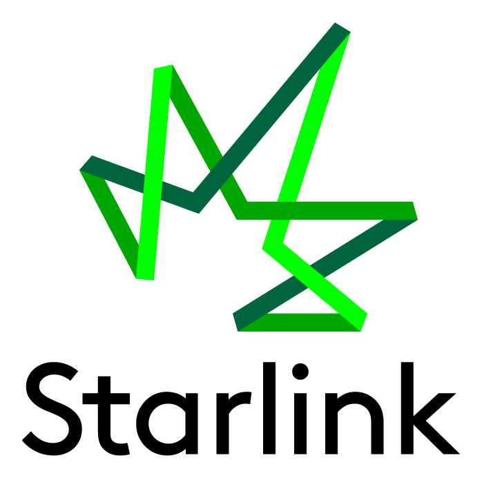
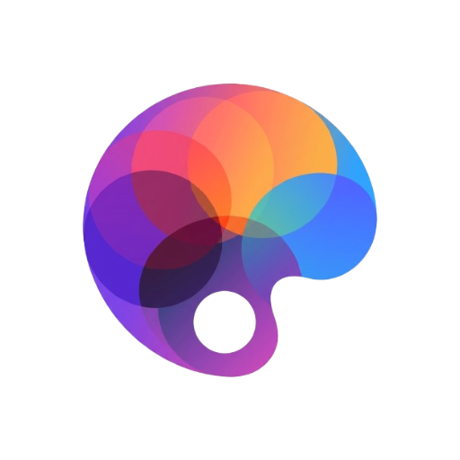
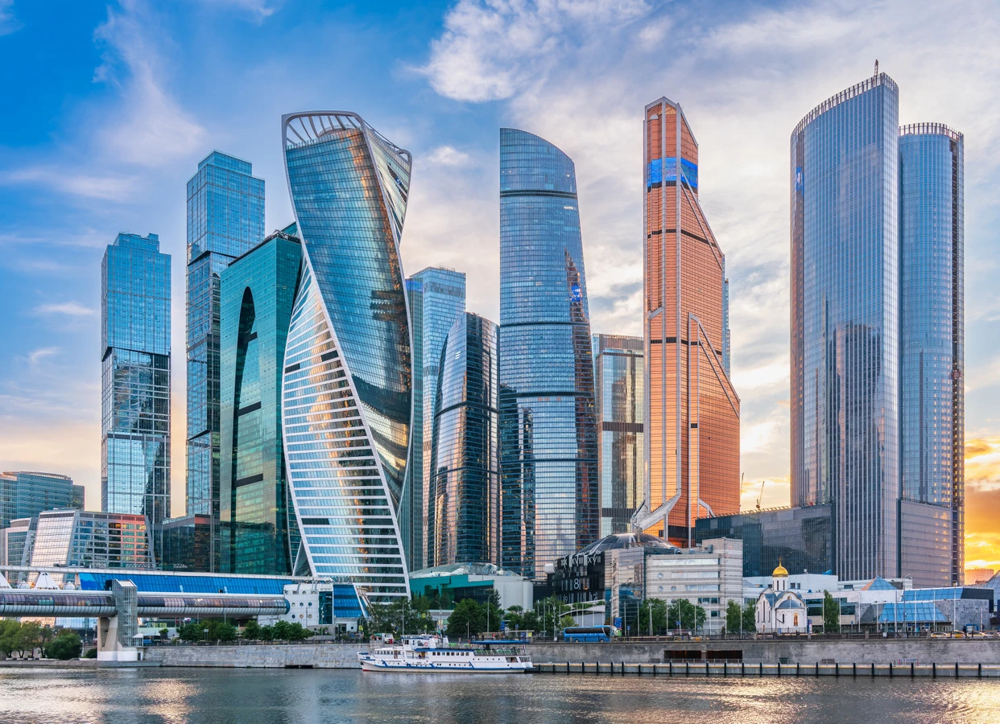

Юрий Папенов
CEO
Бизнес-процессы и управление
Performance с максимально прозрачным подходом и полностью измеримым результатом
За десятилетия работы каждый прошёл путь с нуля до управленческих позиций
Знаем изнутри: Как работать с крупнейшими рекламодателями в различных отраслях Все тонкости процессов создания и ведения рекламных кампаний Особенности проведения тендеров и нюансы клиентского сервиса
Впитав лучшие подходы к построению команд, разработке стратегий и созданию клиентского сервиса, мы хотим переосмыслить этот процесс и добавить свежий взгляд.
2026 год — точка пересборки для многих компаний
Агентство Starline создано в рамках ГК Starlink. Ресурсы, возможности и опыт группы компаний позволяют реализовать все задуманные идеи

ГК Starlink Starline
Консалтинг
Офлайн
ТВ
Стратегия
GEO
Спецпроекты
AI-Продакшен
Креатив
SEO
OLV
Media
Performance
Мобильная реклама
AI-Assisted аналитика
Retail Media
CTV
Starline
Консалтинг
Офлайн
ТВ
Стратегия
GEO
Спецпроекты
AI-Продакшен
Креатив
SEO
OLV
Media
Performance
Мобильная реклама
AI-Assisted аналитика
Retail Media
CTV
CEO
Бизнес-процессы и управление
Директор по клиентскому сервису
Аккаунтинг и производство

Технический лид
AI, автоматизация и технологии
Digital-рынок
Опыт команды позволяет максимально эффективно управлять привлечением клиентов на всех этапах воронки и непосредственно влиять на GMV
Новый подход к performance
Palitra ускоряет анализ, отчётность и распределение бюджетов — решения остаются под контролем специалиста

Находит отклонения, точки роста и сигналы неэффективности.
Создаёт варианты с учётом контекста, аудитории и целей кампании.
Структурирует данные и превращает их в понятные выводы.
Моделирует сценарии и помогает распределять инвестиции.
Одобрение специалистом (HITL)
AI-директор по маркетингу доступен 24/7 и знает всё о вашей рекламе и нашей работе над ней
Практика
Кейс привёл к пяти годам плотной эффективной работы.

Real estateРезультат помог перезапустить маркетинг для серии объектов в новом сложном регионе.
Впервые за последние 5 лет e-com направление выросло одновременно с общим GMV бизнеса.
Следующий шаг
Обсудим задачу и определим, с чего начать: с аудита, пилота или стратегии масштабирования.